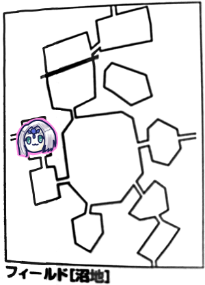
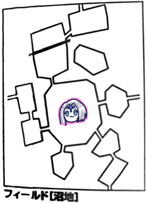
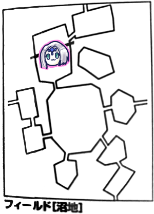

2ヶ月ぶりのエターナルでございます！
前回までのあらすじ！
守りの剣の捜索に沼地までやってきた一行。
沼地に拠点を構えるエルフの老人ドマからそれっぽい遺跡の情報を得ると共に、その途中にある壁を超える方法の探索と沼地にかけられた呪いの解消の依頼を受ける。
そして始まる沼地の主、アンデッドジェネラルとの壮絶なおいかけっこ！
壁の情報を取得、呪いの原因となっていた神像を破壊してジェネラルも激おこだ！

で、ドマに依頼報告をしにきたところで敵と遭遇したんでしたね。開幕戦闘からです。VSレッサーマンティコア＆チャスナットシューター。
タッシュ「チャスナットにファイアーボール撃ちます。お、6ゾロ」
GM「だめでした」
ピーター「威力表0です」
みぞれ「フラグ立てるのやめて」
タッシュ「大丈夫、11点ダメージ」
ピーター「続けてチャスナットに撃ち込んじゃっていいですか、ファイアブラスト撃ちまーす、19」
GM「チャスナット1だけ抵抗失敗」
ピーター「14点ダメージです」
ナナシ「チャスナット1を攻撃して結果見たら？」
ブルーローズ「んーじゃキャッツアイしてー、マッスルベアはいいかな？せいっ、17」
GM「14、だめ」
ブルーローズ「てい！37点ダメージです」
みぞれ「めっちゃ回ってるやんさすが」
GM「いたい」
みぞれ「ブルーローズ追加攻撃は？」
ナナシ「できない…あっできるできる」
ブルーローズ「追加攻撃！15」
GM「16回避」
みぞれ「どうする？残飯処理しようか？」
ナナシ「俺ができると思う、先いきます、えーと、脳内会議中」
タッシュ「このレベル帯になるとね、色々と」
ナナシ「キャッツアイ、ファストアクションでー、ウィップでチャスナット1を叩きます。20」
GM「17、残念」
ナナシ「てい、14点」
GM「撃破されましたー」
ナナシ「じゃ2回目ー、絡み…絡むのかチャスナットは」
GM「絡まない、ツタだから」
ナナシ「そういやウィップは絡み選択できるけど選択できない場合どうなるんですか」
GM「後で考えとく」
ナナシ「ペナルティ入らないなら絡まない選択にしたいんだけど」
GM「ペナルティなしでいいよ」
ナナシ「じゃそのまま攻撃、21」
GM「15」
ナナシ「14点ダメージ」
みぞれ「エフェクトバレット風をマンティコアの爪に。15」
GM「17、避け」
GM「チャスナット実を飛ばします。炎の攻撃をしてきたのはタッシュとピーターだよね。熱いことしてきた人を狙おうと思います」
ナナシ「挑発攻撃は？」
GM「あ。えーと、じゃナナシに射撃攻撃します。19」
ナナシ「はい避けました22」
GM「では2回目。同じ攻撃。20」
ナナシ「24！」
GM「じゃレッサーマンティコア。後ろ半身が先に攻撃します。前進」
ナナシ「後ろ半身が前進。尻が迫ってくる」
GM「まあ前半身と一緒に動くんだけどね。ブルーローズに尻尾で攻撃。17」
ブルーローズ「回避…キャラシーのどこに書いてあるかわからない」
ナナシ「振ろうか？」
ブルーローズ「お願いします」
ナナシ「19、回避」
GM「残念」
GM「そしたら上半身はキャッツアイとビートルスキン使用してー」
タッシュ「うざい」
GM「上半身は歩いてないので魔法使えるってことでー」
ナナシ「それありなんですか」
GM「別々のモンスターとして扱うってあるからね。連動するならキャッツアイ両方にかかるから最高なんだけどなー」
ナナシ「キャッツアイどっちにもかかると思ってた。なかなか変なルールっすね」
タッシュ「昔からこの部位については色々言いたいことが多いのよ」
GM「ポイズンクラウドを後ろの3人にかけます。タッシュ先生はそのまま抵抗でOKです。16」
ピーター「15」
みぞれ「15」
GM「手番が終わるごとに3点ずつダメージうけます。持続6ラウンドです。戦闘が終わっても解除されないことに気を付けてください」
ナナシ「仕事ができたな」
みぞれ「主砲よろしくお願いします」
タッシュ「ファイアウェポンをブルーローズにかけます」
ブルーローズ「じゃ私いきます。残りのチャスナットに魔力撃キャッツアイファイアウェポン。20－」
GM「19、惜しい！」
ブルーローズ「26点！追撃17！」
GM「15」
ブルーローズ「27点！」
GM「しんだ」
ピーター「あとマンティコアだけだね、頭にウィンドカッター撃ちます。クリった」
GM「18、回避できませーん」
ピーター「15点ダメージでーす。副行動でパラミス撃ちまーす」
みぞれ「エフェクトバレット風をマンティコアの頭に撃ちます、14」
GM「13、パラミス入って13」
みぞれ「うさちゃんありがとう！14点！」
ナナシ「じゃいくよー。ウィップで挑発攻撃。22、どうだ避けられまい」
GM「12、避けられませーん」
ナナシ「ダメージ16点」
GM「マンティコア倒れまーす。コア部位壊れたので死にました。戦闘終了です」
GM「戦闘終了してるから毒のダメージくらって」
みぞれ「戦闘終了でもくらうんか」
GM「くらいます」
みぞれ「探索しようか」
タッシュ「先に回復しないと大変なことになるよ、10分だから」
みぞれ「はっ…一気にくらうのか」
ブルーローズ「じゃ2人にキュアポイズン。はい成功」
GM「毒強度があるので達成値あるよ」
ピーター「補正値入れて回してくれないと」
ブルーローズ「なるほど、じゃ2d6+8でー15」
GM「解けません、こっち16」
ブルーローズ「これもっかいやっていいの？」
GM「MPが続く限りやってくれていいよ」
ブルーローズ「じゃもっかい。11。ダメだ。」
「もう15点食らってHP回復しよう」
くらいました。
ピーター「ウィスパーヒールうちます。自分のみぞれちゃん以外にいる？HP減ってる人」
「みんな」
ピーター「じゃみんな。はい成功、12回復」
ブルーローズ「ビビッド歌いまーすびびびー」
ドマに壁の情報を報告して収納ブレスレットをもらいました。
みぞれ「これうさちゃんの袋とどう違うんだ」
GM「でかいものが収納できる」
みぞれ「こないだ壊した呪いの像収納できる？」
GM「あ、壊したんだっけ、そのクエスト発動予定だったんだ、★を2個と通訳の耳飾りをあげよう」
みぞれ「つよい」
GM「あとこのクエスト大変だから魔晶石をあげよう。2d6振ってください」
ブルーローズ「8」
GM「8点残ってる魔晶石が手に入りました」
ブルーローズ「これ3点3点2点とかじゃだめなんですか」
ピーター「だめでーす」
ブルーローズ「私8点一気に使う場面ないから」
ピーター「少しずつ使えるよ」
ナナシ「ナナシがもらうね」
みぞれ「このまま反復横跳びして回復して壁向かう？」
ピーター「携帯食料どれだけある？」
ナナシ「全員で8日分。反復横跳びして壁超えて村に戻るのでぴったり消費するからそうするか」
ドマ「沼地の霧が晴れたから今まで使えなかったこっちの小屋使って休息していいぞ。宿代食事代もこっちで持つ」
「なんだって」
GM「泊まりますか？」
「これ泊まる以外の選択肢ある？」
GM「はい泊まりました。みなさんの自然回復量を決める前に1d6を振ってください」
ナナシ「なにそれアンデッドジェネラルが殴りこんでくる？5」
GM「ドマがうきうきして色々語ってきます。初恋の人の名前とか」
「いらない情報」
GM「ドマの話が止まらず寝かせてくれませんでした。半分しか回復しません」
ブルーローズ「これってイベント表振るんですか？」
GM「ドマの小屋で泊まった場合は振らないでいいよ」
ブルーローズ「回復して休憩する？神聖魔法にホーリークレイドルってのがあって3時間の休憩で6時間分の休憩が取れる」
みぞれ「プリーストっぽい！」
タッシュ「プリーストだよ」
ピーター「じゃウィスパーヒール」
ブルーローズ「タッシュ先生回復しきってるならこの範囲にドマさん入れてみんな寝ちゃおう」
タッシュ「MPは回復してないよ」
結局ナナシを外して3時間休憩、ドマ入れて強制的に眠らせて6時間休憩しました。
ナナシ「待ってる間ブルーローズに鬼絡みしていい？」
みぞれ「第2のドマが現れた」
GM「ジェネラル移動します。3」
南へ。

GM「ではイベント表ナナシからどうぞ」
ナナシ「5」
GM「沼地イベントです」
ナナシ「4」
GM「とても不潔です。12を目標に生命抵抗判定してください」
全員抵抗
GM「残念」
GM「11時になりました。アンデッドジェネラルさん移動します。3ですね」

東へ。
GM「ピーターさん」
ピーター「はい」
GM「ここにジェネラルいるんですよ。1～4が出れば神殿の中、5、6で神殿の外にいます」
ピーター「ええー…3」
GM「神殿の扉は閉まっていて、足跡から中にいるとわかる。じゃイベントをブルーローズお願いします」
ブルーローズ「2」
GM「何も起きません」

GM「葦が密集して生えている沼地です。ジェネラルチェックは3、ここには来ないです。イベントタッシュお願いします」
タ「6」
GM「怪物が3体でてきました。スケルトンが2体、牛の魔物が1体です」
ナナシ「遭ったことないんですか」
GM「おそらく」
ピーター「魔物知識判定します」
GM「両方弱点抜きました。スケルトンガーディアンとジィです」
みぞれ「グレネードをスケルトンに撃ちます。14、低いなー抵抗どうぞ」
GM「スケルトン2が抵抗失敗です」
みぞれ「17点ダメージでーす」
タッシュ「ファイアーボールをスケルトンに。14」
GM「両方抵抗」
タッシュ「ダメージはよかった。16点です」
ピーター「フレイムアロー×2をスケルトンに。18」
GM「両方失敗」
ピーター「16点ダメージですね。そのままスケルトン1にパラミス撃ちます」
ブルーローズ「魔力撃キャッツアイでーHP残ってる方のスケルトンを攻撃。19」
GM「1ですね。パラミスくらってるから11、はい失敗」
ブルーローズ「26点！」
GM「酷いダメージくらいました」
ブルーローズ「追加攻撃します。20」
GM「14。避けられません」
ブルーローズ「25点！」
GM「破壊されました」
GM「ナナシどうします？」
ナナシ「やれることがない。出ますよー。スケルトン2にウィップで21」
GM「回避します。こいつは特に何もないので通常回避…クリティカル。じゃこっちの番ね」
ナナシ「まだです。これファストアクションで。…いや、これ下手にやらない方がいいな」
現在スケルトンHP14、HP10 以下で攻撃が必中になるので見送り。
GM「じゃスケルトン2が…ランダムでいきます。ブルーローズに。18」
ブルーローズ「16」
GM「16点ダメージです」
GM「ジィが魔法を打ちます。神聖魔法6レベル。コアーシブ。ダメージを与える行動を制限します。これで詰ませて逃亡させてジェネラルに遭遇しに行かせる」
タッシュ「大丈夫いざとなったら俺が殴りに行く。意外と殴れるなと思った」
ナナシ「コアーシブ受けるつもりなんですけど」
タッシュ「いやいや抵抗して？種族的に得意なはずでしょ」
GM「21、抵抗してください」
ブルーローズ「19、おしい」
ナナシ「22」
ブルーローズ「うしこわい、ほねこわくない。骨殴ります。16」
GM「避けるよそれは。あっ15」
ブルーローズ「26点！」
GM「倒れた」
ナナシ「行くよ逆襲。これさすがに絡みに行けますよね」
GM「そうね」
ナナシ「よっしゃ！そしたらータッシュー」
タッシュ「はい」
ナナシ「僕が移動する前にファナティ欲しいんですけど。避けるんで」
タッシュ「余裕あるってことか。ご本人のご要望があったんでファナティかけましょう。はい成功」
ナナシ「牛ちゃんの首をウィップで締めます。17」
GM「回避するよー18。できた」
ピーター「ジィにフレイムアロー撃ちまーす。17」
GM「18。抵抗」
ピーター「16点なんで8点ダメージです。あんまり意味ないかもしれないけどパークメイルをナナシにかけます」
ナナシ「パークメイルいいっすよ」
ピーター「ならなしで」
ナナシ「ジィに攻撃します。ジィって先読み(回避+2命中-2)って宣言しました？」
みぞれ「宣言聞いてないですね」
GM「仕方ない、当たりました」
ナナシ「13 点ダメージで」
みぞれ「ソリバレのみで、19」
GM「14」
みぞれ「12点ダメージ」
GM「そしたらージィは主動作で絡みを解く、で終了」
ナナシ「そういや挑発攻撃って言ってなかったね」
ナナシ「ピーターってパラミス撃つ余裕ある？」
ピーター「どういう意味かわからないんですが」
ナナシ「財力的な意味で」
ピーター「-1の方なら余裕がありますよー、もっとって言われたら考えますけど。そしたらスネアかけてパラミス撃ちます」
タッシュ「絶対当てさせるマン」
ピーター「18」
GM「15」
ピーター「転倒してください。さらにパラミスかけまーす。スネアは全部の行使判定に影響あるので気を付けてくださーい」
GM「あれそうだっけ」
ピーター「パラミスは回避だけだけどスネアは全部だった気がした。あ、生命抵抗精神抵抗は関係ないって、失礼しました」
ナナシ「挑発攻撃、ウィップでジィの首をしめます。21、あ-4だから17か」
GM「14、かかった」
ナナシ「14点ダメージ」
みぞれ「ブルーローズは牛殴れないんだよね」
ナナシ「みんないいよチアで」
みぞれ「じゃチアで」
ブルーローズ「ここから始まるのは戦闘ではない、肉の解体ショーだ」
タッシュ「これ移動18mで今いるところからどこまで行けるかな」
GM「前衛まで15mかな？」
みぞれ「なに、前行くのタッシュ先生」
タッシュ「行っといたほうがいいかなって思って。前に出て攻撃」
ブルーローズ「タッシュダッシュ」
タッシュ「じゃ前に出てー牛を殴ります。17」
GM「転倒とパラミスがあるからー16」
タッシュ「12点ダメージ」
GM「どうしよっかなー発声はできないからー…相談なんだけど、絡み＋挑発攻撃でできる行動について、絡みを解くことはできる？アルケミストワークスの引っ張り合い(相手を転倒させる)とかできる？」
タッシュ「そもそもジィさん知能高いから挑発攻撃通らないんじゃないの？」
ナナシ「挑発攻撃2は知能高いやつにも入るけど対象以外を攻撃する時にペナ入るよ」
GM「じゃ挑発中の引っ張り合いはできる、絡み解くのができないってことで。結局絡みが入ってるんだよなー。じゃえっと、先読みを宣言して、エロ根性出して引っ張り合いをします。19。冒険者LV+筋力で」
ナナシ「16、あ負けるわこれ。はい。あ、ウィップ手放してもいいですかねこれ。振っちゃったけど」
GM「いいよー」
ピーター「転倒から復帰するって言ってないよね」
GM「あっ言ってない」
ナナシ「サーベルで挑発攻撃。20」
GM「クリティカル回避！」
タッシュ「じゃ殴ります。14」
GM「18回避」
みぞれ「じゃソリバレのみで…あれ私これ弾丸ないな」
ナナシ「玉なし」
みぞれ「やめて」
ピーター「ファイアアロー撃ちます。20」
GM「20抵抗」
ピーター「13、1点足りな…あっ切り上げか！よかった」
GM「しにました」
さて、問題の壁です。
金貨ですが、リプレイを確認したところ5枚手に入ってました。確認したら書いた跡があったらしいです。借金返済で売り払った可能性もありますが、今回のセッションの前に持ってたことにしていいという話になってました。
というわけで金貨をゴーレムにあげます。
GM「ゴーレムは20m級の巨人に変わって手を差し出してきました」
「乗れってことか。乗ります」
GM「壁の上に降ろしてもらいました」
「壁の向こう側じゃなくて？」
GM「崖の上が上側のエリアになります」
「あ、これ壁っていうか崖なのか」
GM「同じエリア内なのでイベント振りなおしはありません。ここのどこかに遺跡があります」
みぞれ「ぱっと見わかるものじゃないんだ」
「楽譜演奏じゃない？これどこだっけ」
みぞれ「ドマさんが勇猛なるものたちが作った都って言ってた。富めるオボロン、優しきウルトゥケ、輝けるアルテイ、英明なるイラボスの4つはメモってあるけどあと1つなんだったっけ？」
GM「勇猛なるエッダ」
みぞれ「それだ！ブルーローズ先生お願いします」
ブルーローズ「エッ↑ダーーー↑」
GM「何も起こらないです」
みぞれ「あれ？じゃ探索してみる？」
ナナシ「イベント表を振らなきゃいけないんじゃ？」
GM「このケースは探索してよいです」
ナナシ「じゃ探索するぜ！20」
GM「出てきました遺跡です！」
ナナシ「おい遺跡あったぞー」
GM「魔動機文明時代の遺跡です」
ナナシ「み↓ぞ→れー↑」
みぞれ「歌が作られている」
ナナシ「魔動機文明語わからないから」
久しぶりのダンジョン攻略となりました。
GM「最大深度を決めます。ころころ…これは開示しませんがこれを超えたらラストフロアです。すべてのダンジョンは暗いので明かりがいります」
みぞれ「タッシュ先生がいます」
タッシュ「久しぶりに光ります」
ダンジョンシステムおさらい。
・逃亡しても前のフロアには戻らない
・先制判定に失敗したらそのターンはしのいでから逃亡
・行動選択は「急ぐ」「通常移動」「とどまる(50%で戦闘＋自由行動)」の3つ
・最大深度は最小で4、最大で24」
とりあえず普通に進むことにしました。
GM「探索判定目標値は13です」
ナナシ「15、成功」
ブルーローズ「深度は1d6ですよね。ころころ…よし6！」
魔動機文明の遺跡～深度6
固定イベントで魔物が出現しました。
GM「魔物の種類を決めます。1d6お願いします」
ブルーローズ「1」
みぞれ「素晴らしくない？ブルーローズ」
ナナシ「最高の采配だね」
ブルーローズ「さっきのエッダの曲の加護がついてる」
GM「全身を包帯に巻かれた異形の怪物が1体」
ブルーローズ「怪我人ですね」
みぞれ「あとは？」
GM「1体だけです」
みぞれ「まじか、うさちゃんセージ判定おねがい」
ピーター「17」
GM「レッサーマミー、弱点抜きました」
ブルーローズ「みなさん気を付けて、あれは怪我人ではありませんわ
ピーター「いっそ怪我人だと思ってヒールかけてあげれば」
ナナシ「こいつ弱点炎なんすよね、先制とりました」
タッシュ「こいつ炎に弱いって弱点とは別に3点入るってことだよね、これファイアウェポン一択やな、ブルーローズにファイアウェポンかけまーす、よし発動」
ブルーローズ「トンファー魔力撃で殴りますね、21」
GM「17」
みぞれ「ひっどい、2/3ぐらいもってった」
タッシュ「弱点が酷いもんなこれ」
ブルーローズ「28点です。追加攻撃します。15」
GM「14」
ブルーローズ「26点！」
GM「はいしんだ」
「はやい」
今回も探索成功しました。
GM「タッシュ先生、深度を決めてください」
タッシュ「2」
魔動機文明の遺跡～深度2
GM「イベントを決めます。タッシュ先生そのまま振ってください」
タッシュ「6」
GM「蛮族がいます。3mを超えて岩のように硬質な体、メイスを持ってます」
ナナシ「やったトロール先生じゃん」
みぞれ「1体のみですか？」
GM「1体のみでーす」
ピーター「魔物知識ふりまーす、22」
GM「余裕だよ、トロールでーす。では先制判定どうぞ」
ナナシ「22、はい取りました」
GM「あ、今回6だったから特別なモンスター遭遇になります。えーと、まずトロールは2体です。それに2足歩行の牛を1体加えます」
ナナシ「牛多いな」
タッシュ「さっき会った牛とは違うの？」
GM「蛮族の大きな部屋という設定なので蛮族がたくさんいます」
みぞれ「モンハウやん」
ピーター「魔物知識判定します。21」
GM「ミノタウロスです」
みぞれ「じゃグレネード撃ちます。18」
GM「全員抵抗失敗」
みぞれ「13点ダメージ、せっかくの威力30なんだからもうちょっと回ってよー」
タッシュ「ファイアーボールを全員に撃ちます。20」
GM「はい全部通りました」
タッシュ「ふぁいあー！はっはっは…11点ダメージ」
ナナシ「何点出たかが重要なんじゃないんですよ。タッシュ先生はダメージが出たことが重要なんですよ」
ピーター「ファイアブラスト撃ちまーす」
GM「トロール両方成功、ミノタウロス失敗」
ピーター「あっ回転した、20点」
GM「トロールしんだ」
ナナシ＆みぞれ「え、1点残ってない？」
タッシュ「GMが死んだっていうならそれでいいよ、こっちはその方が都合いいし」
ブルーローズ「じゃ異貌化して」
ナナシ「お前ナイトメアだったのか」
タッシュ「このやり取り何回目だよ」
ブルーローズ「マッスルベアだけでいいかな？えーとトンファーで魔力撃で、19」
ナナシ「クリティカルしか避けられない」
みぞれ「ええやん」
GM「17」
ブルーローズ「29点ダメージ、追撃17」
GM「17、回避」
ナナシ「じゃいくよー。ウィップでミノタウロス攻撃します。14、えっ」
ブルーローズ「挑発攻撃はしないの」
ナナシ「ファストアクションなんで」
GM「13」
ナナシ「13点ダメージ。はい、ウィップで挑発攻撃します、17」
GM「クリティカル回避」
ナナシ「これ練技全盛りでしょうね」
GM「マッスルベアビートルスキンガゼルフットリカバリィ使ってー」
ブルーローズ「ラスボスみたいな挙動するね」
GM「全力攻撃使ってブルーローズ狙います」
ブルーローズ「みゃーーー」
GM「19です」
ブルーローズ「13」
GM「27点ダメージです」
ブルーローズ「ジャンボジェット機でも停まったかしら」
タッシュ「それつまり相当痛かったってこと」
ナナシ「ブルーローズ代行でミノタウロスに攻撃します。18」
GM「12」
ナナシ「30点ダメージ」
GM「しにました。戦闘終了です」
タッシュ「これミノタウロス全力攻撃で薙ぎ払いできるの」
GM「できるよ」
タッシュ「恐ろしい」
今回も普通に進みます。
GM「じゃ深度ピーター振ってくだしあ」
ピーター「あれ、探索判定先ですよね」
ナナシ「ほい成功」
ピーター「深度5です、いえーい」
魔動機文明の遺跡～深度13
GM「イベントを処理します。イベント決定表3を振れと。ピーター1d6振ってください」
ピーター「1」
GM「何もありません」
ピーター「いえーい」
GM「まーじーかー」
普通に進む。
GM「探索判定の目標値は16です」
みぞれ「一気に上がった」
ナナシ「失敗したわ」
他にスカウト持ちがいないので全員クリティカル狙いで素目で振って失敗しました。
GM「それじゃとどまるしかないですね。1d6振ってください」
ナナシ「4」
GM「モンスターが出てきます。1d6どうぞ」
ナナシ「3」
GM「レッサーマミーです」
ピーター「セージ判定24です」
GM「はい、弱点抜きました」
ナナシ「先制21、取りました」
みぞれ「さっきと同じでいんじゃね」
ブルーローズ「ファイアウェポンいる？」
みぞれ「タッシュ先生に余裕があるなら」
タッシュ「誰も信じてくれない、魔力無尽蔵じゃないって、はい成功」
ブルーローズ「焼却だ！19」
GM「15」
ブルーローズ「26点。追加攻撃します。ん゛っ(1ゾロ)いやー成長しちゃったなー」
ナナシ「じゃナナシ出ますよ。ウィップで挑発攻撃します。14」
GM「11」
ナナシ「15点ダメージ。ファストアクションでもう1回。15」
GM「13」
ナナシ「12点ダメージ」
みぞれ＆ピーター「チアで」
GM「これはナナシしか狙えないのか。14」
ナナシ「26！ブレードスカートの餌食だ、13点ダメージ、撃破ー」
ブルーローズ「これ自分で回復した方がいいよね。キュアウーンズ。…1ゾロだよ？もっかい…1ゾロだよ？」
この後何回かキュアウーンズかけました。
みぞれ「ブルーローズに魔香草炊きますね」
ナナシ「探索します、15、ダメだ」
ピーター「村効果で振りなおせるよ」
ナナシ「15、ダメだ」
GM「では再度1d6振ってください」
ナナシ「1！」
GM「再度探索どうぞ」
ナナシ「17！あ、出た！出た！やった！」
GM「みぞれ1d6どうぞ」
出目メモってないですがラストフロアに到達しました。
魔動機文明の遺跡～ラストフロア
GM「最後の部屋でーす。大きな部屋に魔動機文明語が部屋中に書かれています。瑠璃色の台座があり、その上に守りの剣が安置されています」
ナナシ「抜いていいかな」
GM「ナナシが抜いていいかなというと、4つ足の魔物が出てきます」
魔物「汝はこの剣を求めるものか」
ナナシ「いかにも」
魔物「それでは私と戦ってこの剣を手に入れるがよい」
タッシュ「そうなるわな」
GM「こいつかけら入ってまーす」
タッシュ「ですよねー」
ピーター「魔物知識判定しまーす。23」
GM「弱点抜きました。キマイラです」
ナナシ「つよいこれ」
タッシュ「LV9だからね」
みぞれ「5部位ｗ」
GM「こいつ頭に3つずつかけら刺さってます」
GM「さて、そろそろ時間切れですがここでセーブしますか？それとも時間ちょっとオーバーしても続けますか？」
「セーブしましょう」
ナナシ「先制判定だけしていい？16。取りました」
GM「じゃ次回ラスボス戦で、終わったら清算してレベルアップって感じでよろしくお願いします！」